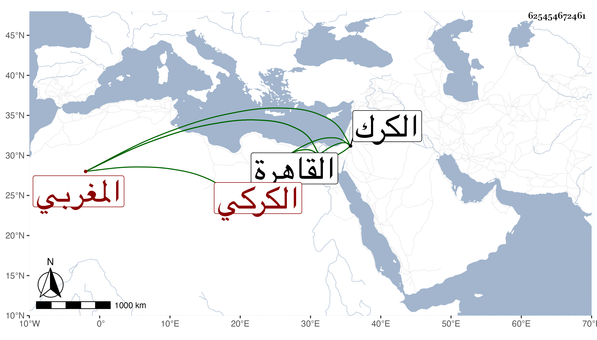

0902Sakhawi.DawLamic.ITO20230111-ara1.EIS1600.625454672461
Biography ID: 625454672461
640
محمد بن سلامة أبو عبد الله التوزري المغربي ثم الكركي نزيل القاهرة . ذكره شيخنا في معجمه فقال : اشتغل كثيرا ومهر في الأصول والمعقول والتصوف وصحب الظاهر برقوق لما سجن بالكرك ، وقدم عليه القاهرة بعد عوده إلى السلطنة فأنزله بيت الدوادار وبالغ في إكرامه بحيث أنه كان إذا أراد الاجتماع به أرسل إليه من مركوبه الفحل المطهم بالسرج الذهب والكنبوش الزركش مع كونه لابسا مسحا أسود . وكان داعية إلى مقالة ابن عربي ووقعت له مع شيخنا البلقيني منازعات ، اجتمعت به وسمعت كلامه . ومات في ربيع الأول سنة ست . وقال غيره إن السلطان كان يجلسه فوق القاضي الشافعي وأنه لم يكن يقبل من أحد شيئا من المال ولا عدل عن لبس العباءة . قال المقريزي والناس فيه بين مفرط في مدحه ومفرط في الغض منه ، ولما مات تولى يلبغا السالمي تجهيزه وبعث إليه السلطان بمائتي دينار للقراءة على قبره أسبوعا ونحو ذلك .
